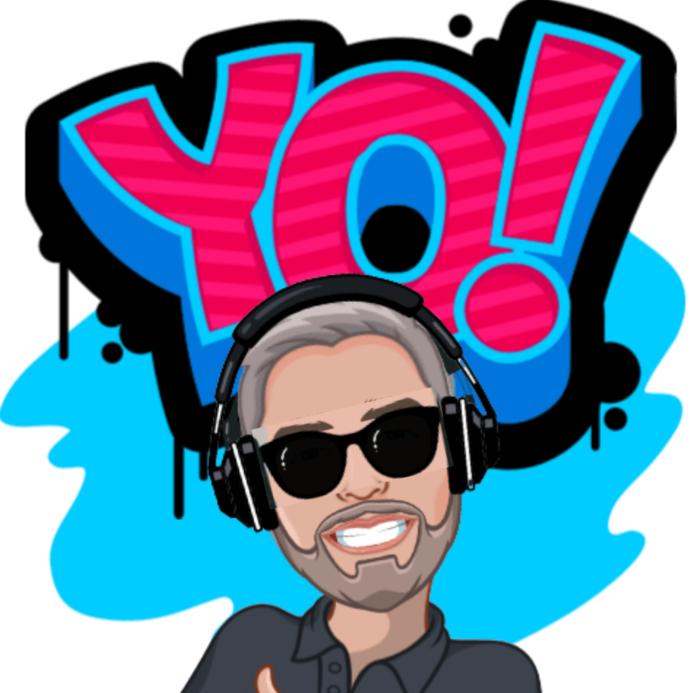
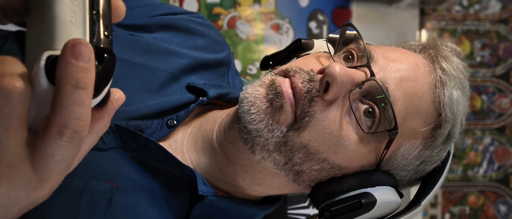
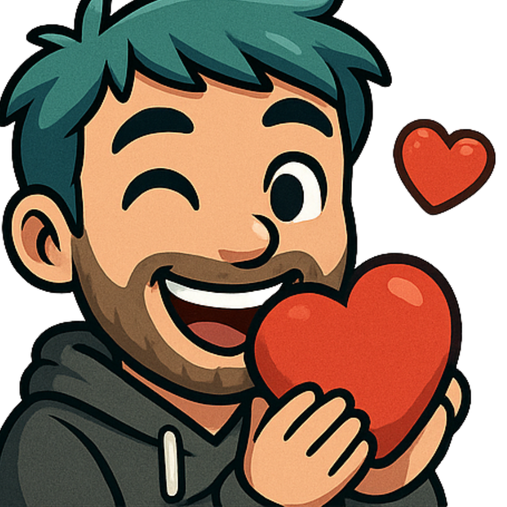
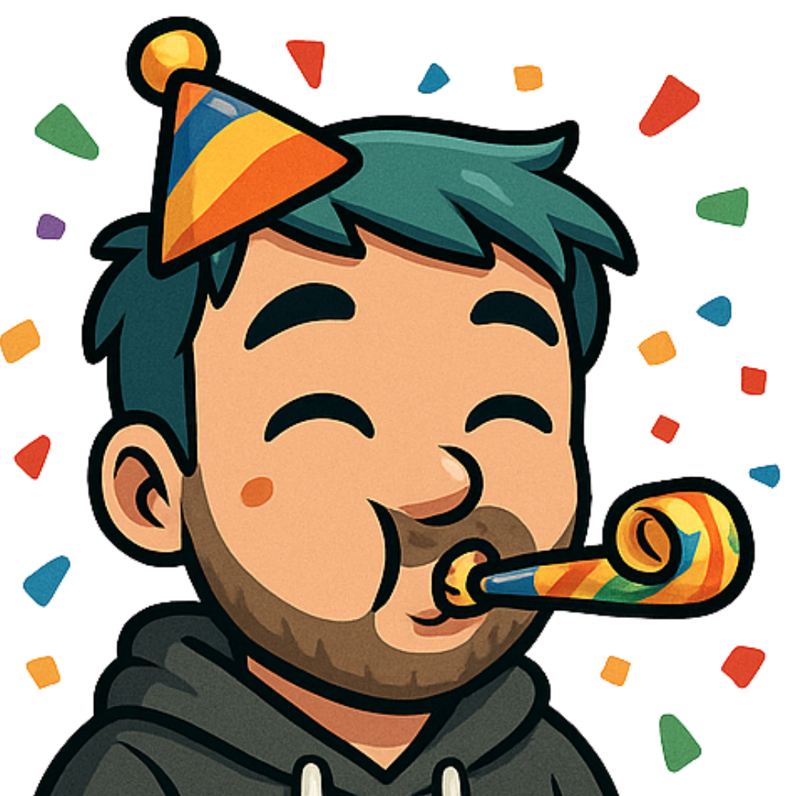
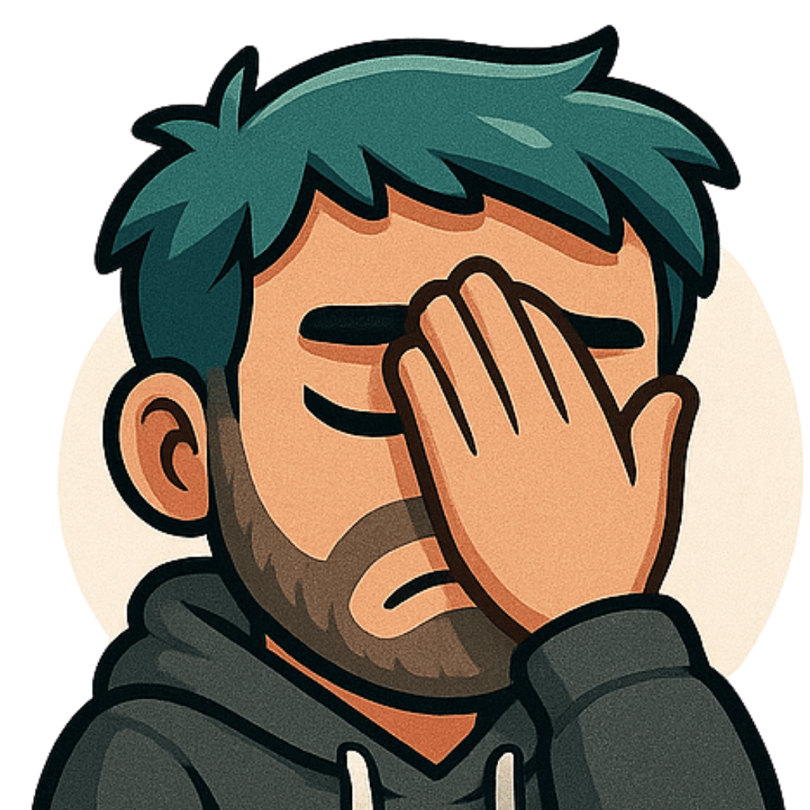
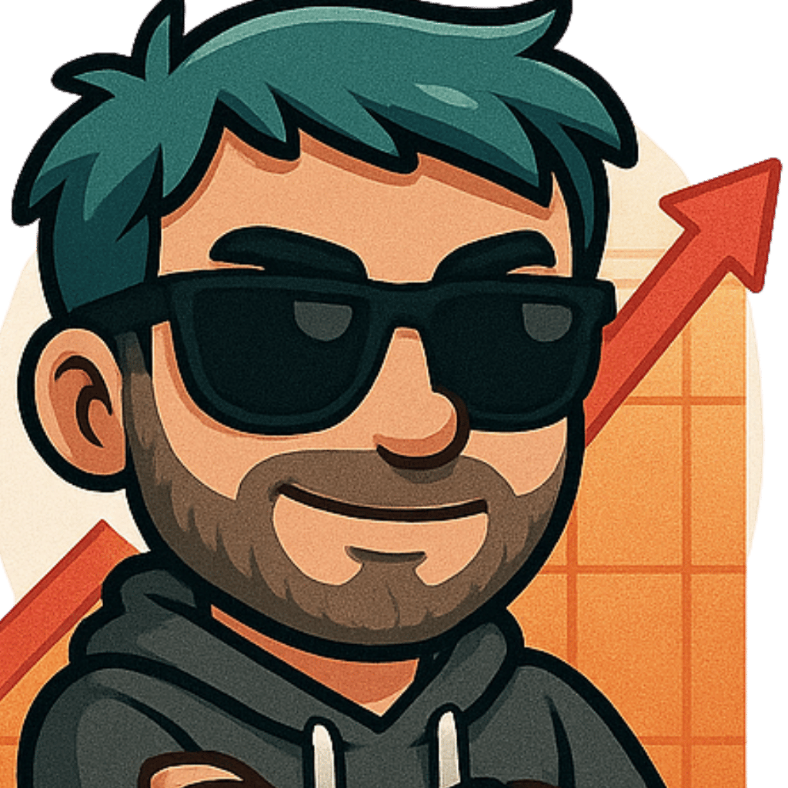
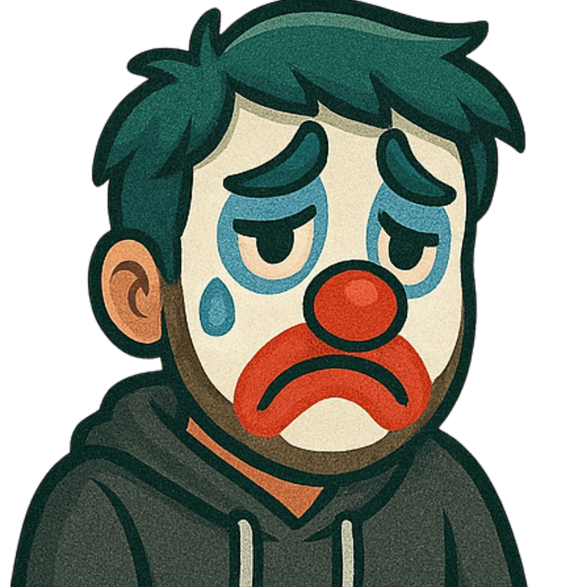
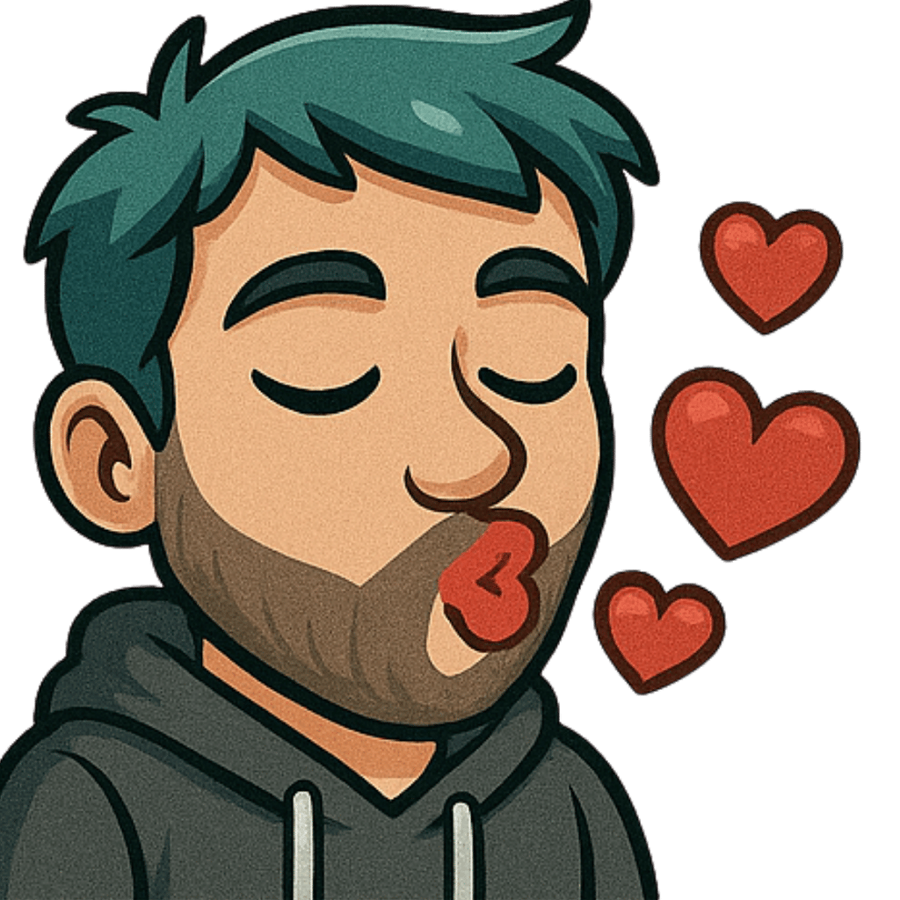

Comme le nom l'indique : un papa qui joue, et qui partage cette passion avec sa communauté — la Papacorp'. Je ne me fixe pas sur un seul jeu : Fortnite, Minecraft, Valorant, jeux du moment, jeux rétro, jeux en famille avec le chat, et beaucoup de Just Chatting. L'idée n'est pas la performance esport, mais de passer un bon moment ensemble — 0% toxicité, modération stricte, tout le monde est le bienvenu.

Papajoue
Papa Gamer passionné et bienveillant. Je partage ma passion du jeu vidéo en famille, dans la bonne humeur et sans prise de tête. Stream chill, entraide et fun au rendez-vous !
Le concept

Liens officiels
La communauté

La Papacorp' est une communauté soudée et intergénérationnelle — beaucoup de parents et de joueurs occasionnels, dans un esprit d'entraide plutôt que de compétition. Le Discord est le cœur de tout ça : annonces de live, discussions, jeux organisés avec les viewers.
Membre de la team Gamers 4 Pets, une communauté de streamers engagée pour la cause animale.
Les émotes de la chaîne









